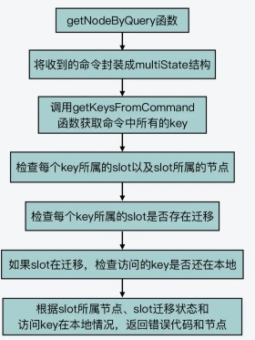

{% details 相关代码 %} cluster.c
/* Return the pointer to the cluster node that is able to serve the command.
* For the function to succeed the command should only target either:
*
* 1) A single key (even multiple times like LPOPRPUSH mylist mylist).
* 2) Multiple keys in the same hash slot, while the slot is stable (no
* resharding in progress).
*
* On success the function returns the node that is able to serve the request.
* If the node is not 'myself' a redirection must be perfomed. The kind of
* redirection is specified setting the integer passed by reference
* 'error_code', which will be set to CLUSTER_REDIR_ASK or
* CLUSTER_REDIR_MOVED.
*
* When the node is 'myself' 'error_code' is set to CLUSTER_REDIR_NONE.
*
* If the command fails NULL is returned, and the reason of the failure is
* provided via 'error_code', which will be set to:
*
* CLUSTER_REDIR_CROSS_SLOT if the request contains multiple keys that
* don't belong to the same hash slot.
*
* CLUSTER_REDIR_UNSTABLE if the request contains multiple keys
* belonging to the same slot, but the slot is not stable (in migration or
* importing state, likely because a resharding is in progress).
*
* CLUSTER_REDIR_DOWN_UNBOUND if the request addresses a slot which is
* not bound to any node. In this case the cluster global state should be
* already "down" but it is fragile to rely on the update of the global state,
* so we also handle it here.
*
* CLUSTER_REDIR_DOWN_STATE if the cluster is down but the user attempts to
* execute a command that addresses one or more keys. */
clusterNode *getNodeByQuery(client *c, struct redisCommand *cmd, robj **argv, int argc, int *hashslot, int *error_code) {
clusterNode *n = NULL;
robj *firstkey = NULL;
int multiple_keys = 0;
multiState *ms, _ms;
multiCmd mc;
int i, slot = 0, migrating_slot = 0, importing_slot = 0, missing_keys = 0;
/* Allow any key to be set if a module disabled cluster redirections. */
if (server.cluster_module_flags & CLUSTER_MODULE_FLAG_NO_REDIRECTION)
return myself;
/* Set error code optimistically for the base case. */
if (error_code) *error_code = CLUSTER_REDIR_NONE;
/* Modules can turn off Redis Cluster redirection: this is useful
* when writing a module that implements a completely different
* distributed system. */
/* We handle all the cases as if they were EXEC commands, so we have
* a common code path for everything */
if (cmd->proc == execCommand) {
/* If CLIENT_MULTI flag is not set EXEC is just going to return an
* error. */
if (!(c->flags & CLIENT_MULTI)) return myself;
ms = &c->mstate;
} else {
/* In order to have a single codepath create a fake Multi State
* structure if the client is not in MULTI/EXEC state, this way
* we have a single codepath below. */
ms = &_ms;
_ms.commands = &mc;
_ms.count = 1;
mc.argv = argv;
mc.argc = argc;
mc.cmd = cmd;
}
/* Check that all the keys are in the same hash slot, and obtain this
* slot and the node associated. */
for (i = 0; i < ms->count; i++) {
struct redisCommand *mcmd;
robj **margv;
int margc, *keyindex, numkeys, j;
mcmd = ms->commands[i].cmd;
margc = ms->commands[i].argc;
margv = ms->commands[i].argv;
keyindex = getKeysFromCommand(mcmd,margv,margc,&numkeys);
for (j = 0; j < numkeys; j++) {
robj *thiskey = margv[keyindex[j]];
int thisslot = keyHashSlot((char*)thiskey->ptr,
sdslen(thiskey->ptr));
if (firstkey == NULL) {
/* This is the first key we see. Check what is the slot
* and node. */
firstkey = thiskey;
slot = thisslot;
n = server.cluster->slots[slot];
/* Error: If a slot is not served, we are in "cluster down"
* state. However the state is yet to be updated, so this was
* not trapped earlier in processCommand(). Report the same
* error to the client. */
if (n == NULL) {
getKeysFreeResult(keyindex);
if (error_code)
*error_code = CLUSTER_REDIR_DOWN_UNBOUND;
return NULL;
}
/* If we are migrating or importing this slot, we need to check
* if we have all the keys in the request (the only way we
* can safely serve the request, otherwise we return a TRYAGAIN
* error). To do so we set the importing/migrating state and
* increment a counter for every missing key. */
if (n == myself &&
server.cluster->migrating_slots_to[slot] != NULL)
{
migrating_slot = 1;
} else if (server.cluster->importing_slots_from[slot] != NULL) {
importing_slot = 1;
}
} else {
/* If it is not the first key, make sure it is exactly
* the same key as the first we saw. */
if (!equalStringObjects(firstkey,thiskey)) {
if (slot != thisslot) {
/* Error: multiple keys from different slots. */
getKeysFreeResult(keyindex);
if (error_code)
*error_code = CLUSTER_REDIR_CROSS_SLOT;
return NULL;
} else {
/* Flag this request as one with multiple different
* keys. */
multiple_keys = 1;
}
}
}
/* Migarting / Improrting slot? Count keys we don't have. */
if ((migrating_slot || importing_slot) &&
lookupKeyRead(&server.db[0],thiskey) == NULL)
{
missing_keys++;
}
}
getKeysFreeResult(keyindex);
}
/* No key at all in command? then we can serve the request
* without redirections or errors in all the cases. */
if (n == NULL) return myself;
/* Cluster is globally down but we got keys? We can't serve the request. */
if (server.cluster->state != CLUSTER_OK) {
if (error_code) *error_code = CLUSTER_REDIR_DOWN_STATE;
return NULL;
}
/* Return the hashslot by reference. */
if (hashslot) *hashslot = slot;
/* MIGRATE always works in the context of the local node if the slot
* is open (migrating or importing state). We need to be able to freely
* move keys among instances in this case. */
if ((migrating_slot || importing_slot) && cmd->proc == migrateCommand)
return myself;
/* If we don't have all the keys and we are migrating the slot, send
* an ASK redirection. */
if (migrating_slot && missing_keys) {
if (error_code) *error_code = CLUSTER_REDIR_ASK;
return server.cluster->migrating_slots_to[slot];
}
/* If we are receiving the slot, and the client correctly flagged the
* request as "ASKING", we can serve the request. However if the request
* involves multiple keys and we don't have them all, the only option is
* to send a TRYAGAIN error. */
if (importing_slot &&
(c->flags & CLIENT_ASKING || cmd->flags & CMD_ASKING))
{
if (multiple_keys && missing_keys) {
if (error_code) *error_code = CLUSTER_REDIR_UNSTABLE;
return NULL;
} else {
return myself;
}
}
/* Handle the read-only client case reading from a slave: if this
* node is a slave and the request is about an hash slot our master
* is serving, we can reply without redirection. */
if (c->flags & CLIENT_READONLY &&
(cmd->flags & CMD_READONLY || cmd->proc == evalCommand ||
cmd->proc == evalShaCommand) &&
nodeIsSlave(myself) &&
myself->slaveof == n)
{
return myself;
}
/* Base case: just return the right node. However if this node is not
* myself, set error_code to MOVED since we need to issue a rediretion. */
if (n != myself && error_code) *error_code = CLUSTER_REDIR_MOVED;
return n;
}
{% enddetails %}
代码展示了 getNodeByQuery 函数基本执行过程

总结 #
Redis Cluster 会因为负载均衡或节点故障等原因而执行数据迁移，而
这就会导致客户端访问的 key 并不在接收到命令的集群节点上。因此，集群节点在命令执
行函数 processCommand 中，针对集群模式，就增加了额外的处理逻辑。这主要是包括
调用 getNodeByQuery 函数查询访问的 key 实际所属的节点，以及根据查询结果调用
clusterRedirectClient 函数执行请求重定向。
事实上，对于分布式集群来说，Redis Cluster 设计实现的请求重定向机制是一个不错的参
考示例。其中，MOVED 和 ASK 两种重定向情况，就充分考虑了数据正在迁移的场景，这
种设计值得我们学习。而且，getNodeByQuery 函数在查询 key 所属的 slot 和节点时，
也充分考虑了 Redis 的事务操作，在对命令访问 key 进行查询时，巧妙地使用了同一个数
据结构 multiState，来封装事务涉及的多条命令和常规的单条命令，增加了代码的复用程
度，这一点也非常值得学习。
参考 #
27 | 从MOVED、ASK看集群节点如何处理命令？ 蒋德钧